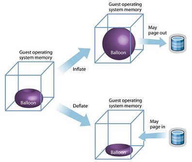
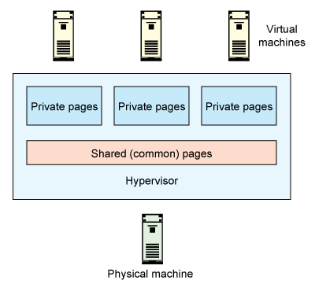

在我们的云平台中，基本都需要这样一个功能，就是收集虚拟机监控数据，比如cpu使用率、内存使用率、磁盘io、网络io等信息。通常这些信息Hypervisor都会提供接口供你获取，这种获取方式成本是低廉的，通常不会对整个虚拟化环境有影响。如果想要获取更多的监控详情信息，那么则需要在虚机里面安装agent来收集监控数据，这种方式获取成本高，有时候用户可能不会接受镜像里面有agent的事实，这好比被安装了后门一样。两种方式各有优劣，看各自的需求场景，具体使用具体分析。
本文主要讨论是如何能通过libvirt接口获取memory-usage，主要是针对kvm虚拟化。
我们先回顾一下，KVM在内存虚拟化上有哪些相关技术可以使用。
KVM的发展路线就是逐步从软件模拟到硬件辅助，内存虚拟化的本质就是实现客户机虚拟地址 (Guest Virtual Address, GVA) 到宿主机物理地址之间的转换， 其主要发展历程就是从最初的影子页表到硬件辅助实现的EPT/NPT页表，对于影子页表KVM需要为每个客户机的每个进程的页表都要维护一套相应的影子页表， 这会带来较大内存上的额外开销，此外，客户机页表和和影子页表的同步也比较复杂。 因此，Intel 的 EPT(Extent Page Table) 技术和 AMD 的 NPT(Nest Page Table) 技术都对内存虚拟化提供了硬件支持。
对于客户机的内存分配上，KVM提供了ballooning机制，其本质就是可以根据宿主机系统内存使用的紧张程度来动态增加或回收客户机的内存占用。 如果你的云计算环境准备实施oversell,那么这个机制是十分有用的，因为宿主机上的客户机不可能同时满载，这样便可以有效利用物理内存。
如果宿主机上跑着很多相同镜像的客户机，那么这些客户机的内存段是有相同之处的，KVM提供了一个KSM(Kernel Samepage Merging)机制，可以将相同的内存合并。 这就意味着在ballooning机制基础上还能更进一步优化内存使用率。但是KSM的开销也很大，尤其是当客户机的镜像耦合非常低会造成KSM效率非常低，不仅内存合并效果不佳， 还会影响宿主机的系统性能，进而影响所有客户机的性能，需要慎重使用。
此外还有HugePage和Transparent HugePage技术。前者可以给客户机分配一块大内存独占使用，但是因为独占导致很多不灵活，不能在宿主机内存紧张的时候换出； 而后者则是继承了HugePage的优点并弥补了这个缺点。大页技术的使用也需要慎重，如果客户机运行的应用比较依赖内存性能(Redis之流)，那么开启这个是值得的。
下面我们要回到本文的主题，就是解析一下OpenStack获取虚机内存的方式，以及一些需要注意的坑。
使用libvirt的命令行工具可以获取虚机的内存信息，方式如下:
$ virsh list
Id Name State
----------------------------------------------------
46 instance-0000081a running
117 instance-000008c0 running
122 instance-00000920 running
$ virsh dommemstat 46
actual 2097152
swap_in 0
rss 1031060
actual是启动虚机时设置的最大内存，rss是qemu process在宿主机上所占用的内存，可以通过 grep VmRSS /proc/$(pidof qemu-system-x86_64)/status 得到。但是我们要获取的是虚机内部的内存使用情况，这样明显不能满足需求。
我们还需要给虚机做些配置，给虚机的libvirt.xml描述文件添加下面的内容:
#每10s钟收集一次
<memballoon model="virtio">
<stats period="10"/>
</memballoon>
再次查询虚机的内存信息，得到:
actual 2097152
swap_in 0
swap_out 0
unused 1904816
available 2050112
rss 299952
unused代表虚机内部未使用的内存量，available代表虚机内部识别出的总内存量，那么虚机内部的内存使用量则是(available-unused)的结果。
首先windows需要安装virtio-win相关驱动，驱动下载地址 在这里 ，除此之外还需要启动BLNSVR服务。
在 Windows 2008r2 and Windows 2012/Win8 :
在 Windows 2003 / Windows Xp :
更多详情请参考: https://pve.proxmox.com/wiki/Dynamic_Memory_Management
在openstack中，ceilometer组件的meter项有一个memory.usage，这一项便是采样虚机内存使用量信息，在I版本是不能获取到的，好在社区有人提出了这个BP并有相关的实现，代码已经合并到master，且在Juno版本中放出。
可以参考下面的链接了解一下: